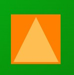
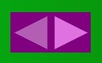
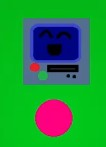
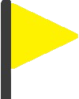
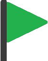
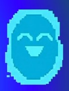

What are the basics of the game?
Of course, these basics are really simple, but don't be fooled...
Of course, these basics are really simple, but don't be fooled...
The classic block, it always stays there... waiting for you to stand on it...

When you get on the jump block, you get thrown up high, maybe even higher depending on your gravity...
>
This block moves back and forth... but the player needs to move alongside it as well! For now though...

These are not saws... these are invisible blocks... trust me bro...


The Yellow Flag is when a checkpoint is not currently active! But if it was once active and a Green Flag, then it will not be active again!
If the flag is Green, when you die, you will automatically respawn to that point when you die

Teleporters help you to go from one place to another... in an instant!